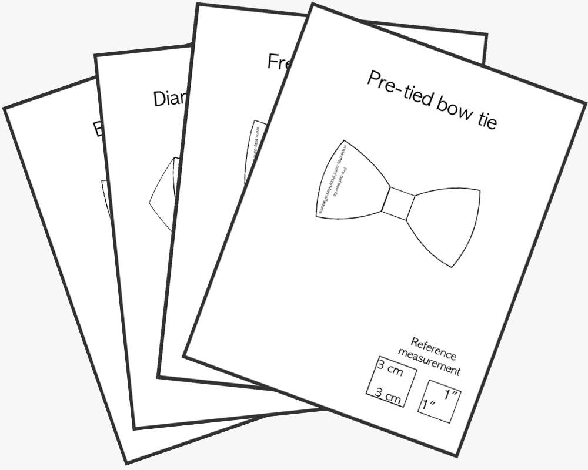
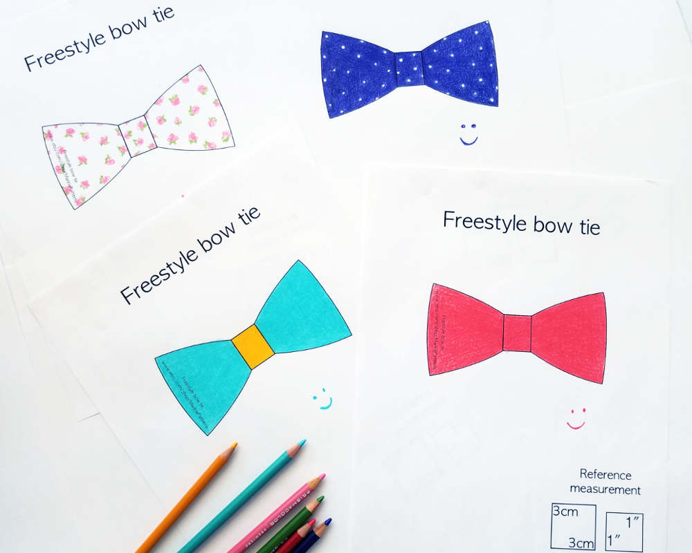
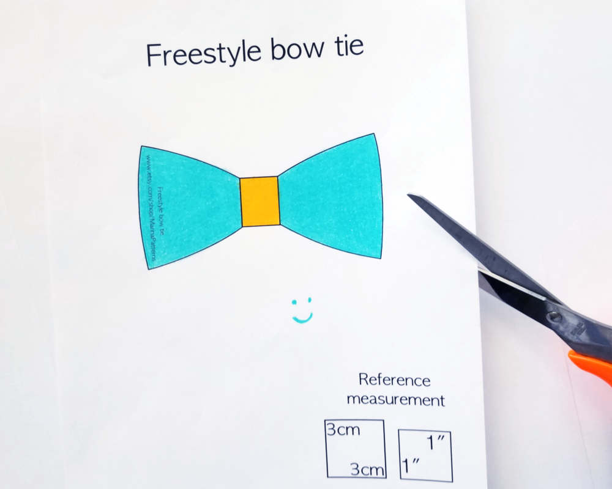
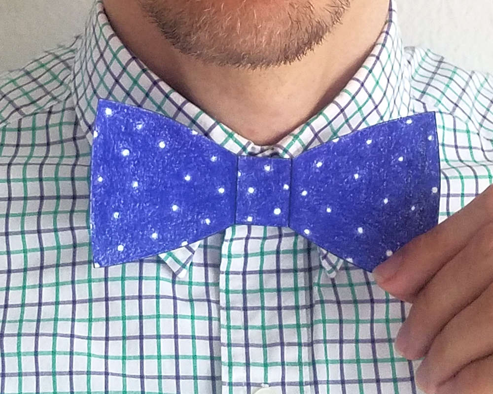

Use our free mockups!
Classical bow tie. Works for any formal and informal occasions. You'll have to tie it yourself.
DownloadPerfect for those who want something unique while still adhereing to a strict black tie dress code. Sharp tips resemble diamond shape. You'll also have to tie it yourself.
DownloadWorks perfectly for bigger people with wide neck and face oval. Also may work well for people with "medium" face features. This is a self-tie bow tie, it works well for formal and everyday occasions.
DownloadBecause this bow tie is pre-tied, its shape is always perfect and remains so forever, if stored properly. It's also convenient for those who don't wear a bow tie because they don't want to tie it.
DownloadAfter you click Download button, a new window will open, where you can download a PDF file with the bow tie drawing. Download the sample you like and print it out. And have fun!
To make the process more creative, print several sheets of the bow tie contour and color them differently. You can lookup the most popular fabric colors and patterns online.
Cut out the contour or the bow tie. Before that, check that the printout has the right scale. There are 1" and 3cm marks in the corner of each PDF file, left specifically for this.
Put on the shirt you're going to wear with the bow tie, and put the paper "bow tie" against it. Look in the mirror to understand if it fits the shape of your face and collar of the shirt.
This is how the patterns look like.
Thank you for visiting!